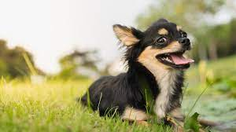

Overview
The Chihuahua[a] (or Spanish: Chihuahueño) is a Mexican breed of toy dog. It is named for the Mexican state of Chihuahua and is among the smallest of all dog breeds.It is usually kept as a companion animal or for showing.The Chihuahua is a tiny dog with a huge personality. A national symbol of Mexico, these alert and amusing "purse dogs" stand among the oldest breeds of the Americas, with a lineage going back to the ancient kingdoms of pre-Columbian times. The Chihuahua is a balanced, graceful dog of terrier-like demeanor, weighing no more than 6 pounds. The rounded "apple" head is a breed hallmark. The erect ears and full, luminous eyes are acutely expressive. Coats come in many colors and patterns, and can be long or short. The varieties are identical except for coat. Chihuahuas possess loyalty, charm, and big-dog attitude. Even tiny dogs require training, and without it this clever scamp will rule your household like a little Napoleon. Compact and confident, Chihuahuas are ideal city pets. They are too small for roughhousing with kids, and special care must be taken in cold weather, but Chihuahuas are adaptable'¿as long as they get lots of quality time in their preferred lap.
Characteristics
- Chihuahuas occur in virtually any color combination, from solid to marked or splashed.
- flat-topped head, more widely set eyes, larger ears, and longer, more slender legs.
- Apple-dome Chihuahuas have large, round eyes and large, erect ears, set in a high, dramatically rounded skull.
- Energetic and playful
Care
The Chihuahua's affectionate and attention-loving nature makes it a snuggly dog that enjoys being carried around and pampered. When raised and handled appropriately, the Chihuahua can make a wonderful companion for many kinds of families. Not all Chihuahuas will automatically get along with children, but they can be trained and socialized to get along with kids. It is often recommended that Chihuahuas not be adopted into a family with young children, as the children may not handle a small dog as gently as is needed to prevent injury.